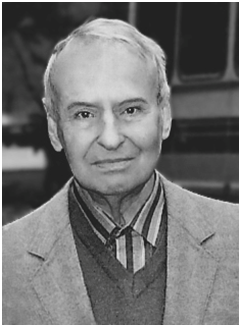

| Назва наукової школи | "Математичні методи дослідження і оптимізації інформаційних систем" |
| Дата і місце заснування | Наукова школа заснована у 1968 році на базі кафедри "Приймально-передаючих пристроїв" Харківського авіаційного інституту (тепер кафедра "Проектування радіоелектронних систем літальних апаратів" "Факультету радіотехнічних систем літальних аппаратів" Національного університету ім. М.Є. Жуковського "Харківський авіаційний інститут". |
| Засновник |

Фалькович Савелій Яремійович, доктор технічних наук, професор,
лауреат Державної премії СРСР,
академік Міжнародної академії прикладної радіоелектроніки.
Народився: 13 лютого 1920 р.
Освіта: після завершення середньої школи у 1937 Савелій Яремійович вступив до Московського енергетичного інституту, а потім був направлений до навчання у Ленінградську військову повітряну академію ім. А.Ф. Можайського. Під час Великої Вітчизняної Війни, знаходячись у лавах Військово-Повітряних Сил діючої армії, він ознайомився з роботою радіотехнічних і радіолокаційних систем. У 1946 році захистив дисертаційну роботу, яка заклала основу подальшого розвитку методів оптимізації прийому сигналів в указаних системах і згодом ввійшла до докторської дисертації та відомої монографії "Прием радиолокационных сигналов на фоне флуктуационных помех" (М. Сов. радио, 1961). З 1968 року Фалькович Савелій Яремійович очолював кафедру радіоелектронних систем літальних апаратів Харківського авіаційного інституту, створену на базі кафедри приймально-передаючих пристроїв. В його роботах та работах його учнів отримує развиток статистична теорія рішень, оцінювання та фільтрації электромагнітних полів як функцій часу і просторових координат. Оптимізація радіотехнічних систем і їх синтез здійснювались на основі системного підходу, який складається в тому, що структури систем і відповідні алгоритми формування сигналів і їх обробки синтезувались в цілому по заданим критерїям якості. С.Я. Фалькович – автор більше 150 наукових робіт та шести монографій, серед яких основоположний вплив на развиток статистичної теорії радіотехнічних систем, окрім раніше цитуємої, мають такі: “Оценка параметров сигнала”. –М.Сов.радио,1970; “Статистическая теория измерительных радиосистем”.-М: Радио и связь,1981; “Оптимальный прием пространственно-временных сигналов в радиоканалах с рассеянием”-М: Радио и связь,1989. Під його керівництвом успішно захищені больше 50 кандидацьких и 10 докторських дисертацій. Наукові досягнення професора С.Я. Фальковича відмічені присудженням йому в 1988 году Державної премії СРСР «За цикл работ по статистической теории Радиоэлектронных систем». |
| Назва наукової школи | Математичні методи дослідження і оптимізації інформаційних систем. |
| Відомі представники школи |
|
| Загальна кількість учнів наукової школи | За роки діяльності у школі підготовані більше 10 докторів наук та 72 кандидатів наук. |
| Атуальність проведення наукових досліджень | Наукові роботи школи охоплюють широке коло досліджень з питань оптимізації систем активної та пасивної радіолокації, радіонавігації, дистанційного зондування, радіоастрономії та радіотелеметрії. Ці системи відіграють важливу роль у сучасному науковому та народногосподарському житті як України, так і розвинених у економічно-промисловому відношенні держав Світу. Отримані результати дозволяють суттєво підвищити якісні показники вказаних систем. |
| Нововведення.Відкриття | Колектив здійснив значний внесок у створення сучасної статистичної теорії просторово-часових вимірювальних радіотехнічних систем. Розроблені перетворення, які є узагальненням перетворень Фур’є, Лапласа, Френеля та теореми Ван Циттерта-Церніке у напрямку обробки надширокосмугових просторово-часових сигналів. |
| Досягнення (теоретичні та практичні) | Колективом опубліковано більше 20 монографій (деякі з них були переведені та перевидані за кордоном), більше 700 статей у наукових журналах та працях міжнародних конференцій. Суттєві досягнення отримані у напрямках дистанційного зондування з авіаційних та супутникових носіїв, комплесування активних і пасивних систем, та нових континуальних і дискретних методів обробки сигналів, які дозволяють вирішувати задачі оцінювання електрофізичних, статистичних характеристик різноманітних природних середовищ. Обґрунтовані нові методики проведення арктичних досліджень з аерокосмічних носіїв, що дозволяє отримувати радіолокаційні знімки підповерхневих шарів льоду та інформацію про їхню структуру, класифікувати виявлені неоднорідності. |
| Цікаві та маловідомі факти у діяльності наукової школи | На кафедрі з моменту створення наукової школи діють семінари з основних напрямків досліджень. |
| Значення наукової школи для суспільства | Практична реалізація розроблених ідей та методів дозволила суттєво підвищити достовірність інформації про фізичні явища, що досліджуються. |
| Сучасний стан наукової школи. Популярність | На сьогодення наукова школа активно працює над різними науковими задачами та проблемами сучасності в інтересах народного господарства України. |
| Місце у світовій практиці | Всі відомі представники школи мають суттєві досягнення світового рівня, та є членами міжнародних наукових організацій. Деякі монографії переведені та видані за кордоном. Декілька представників школи постійно проживають і працюють за кордоном. Керівник школи Волосюк Валерій Костянтинович є Соросівським доцентом з 1995 року та членом Нью-Йоркської Академії Наук. |